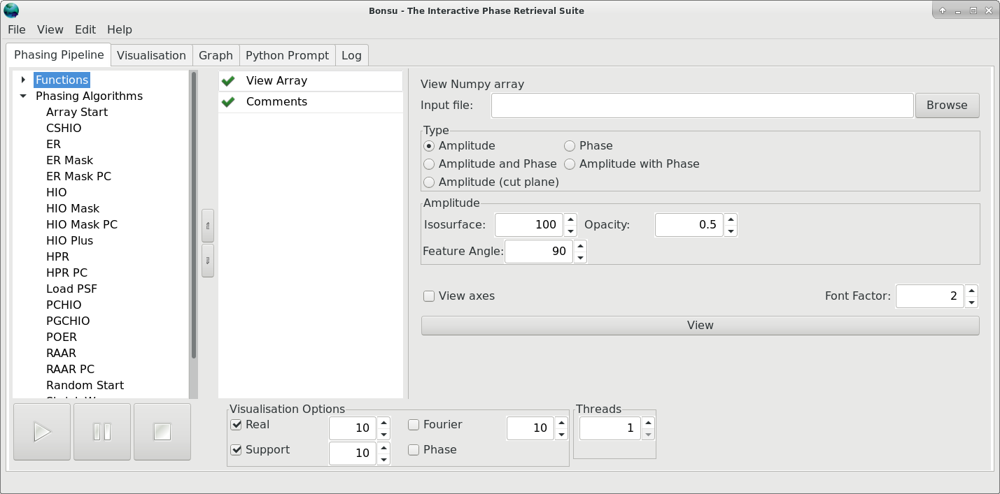
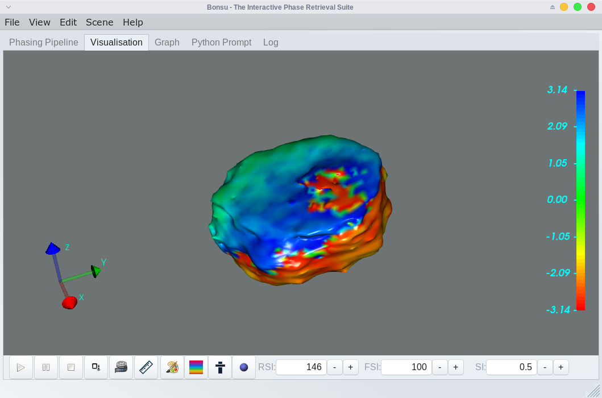

General Usage¶
The following describes the general usage procedure when interacting with the graphical user interface. If you would like to script with Bonsu, there are at least two options available. The first option is to use the Python Script function which permits arbitrary operations on arrays. This is useful when combining custom operations on arrays with native functions. The second option is to import Bonsu into a Python script. The procedure for doing so is described in detail here.
User Interface¶
The graphical user interface is divided into five tabs which are namely Phasing Pipeline, Visualisation, Graph, Python Prompt and Log. Algorithms and tools are manipulated and executed on the Phasing Pipeline tab. During algorithmic phase retrieval, real-time images of the object during reconstruction are shown on the Visualisation tab. Information regarding the statistical error during phase retrieval is displayed on the Graph tab. The Log tab provides the user with any information the various algorithms and tools return during execution. The Python Prompt is, as it suggests, a fully functioning interactive python shell.
When loading and saving files, the current working directory where the program was loaded is used as the default path. It is possible to change the working directory by selecting from the main menu.
The remainder of this section describes in further detail the use of each graphical interface tab.
Phasing Pipeline¶
Most user interaction occurs in the Phasing Pipeline tab. This tab is divided into three columns. From left to right, the first shows a drop-down menu divided into three sections where various array functions, phasing algorithms and posterior phasing operations can be found. For a complete list of available operations and algorithms, please see the Library Reference. Once selected from the drop-down menu (with a carriage return or mouse double click), an instance of the selected item appears in the centre column (or pipeline), where it can be selected in the pipeline and properties modified for that instance. The properties appear in the right-hand column.
Check boxes to the immediate left of each item in the pipeline provide the option to exempt that item from execution without removing the item from the pipeline. By simply selecting the check so that a cross is displayed, the item will be ignored during execution of the pipeline. This is often useful for testing purposes.
Once items have been added to the pipeline, it is possible to save the contents of the pipeline and all custom settings by simply choosing Save from the menu. At this point, the user is prompted for a file name. See Saving Sessions for further details.
Below the three columns are the control buttons Start, Pause and Stop. These buttons will, respectively, execute all items in the pipeline sequentially in the order that they appear, pause the execution of an algorithm or stop the execution of an algorithm. The remaining checkboxes control the type of visualization that appears on the ‘Visualisation’ tab and the maximum number of threads used by the Fourier transform algorithm. The options include no visualization, real-space amplitude, real-space amplitude with phase, Fourier-space amplitude and Fourier-space amplitude with phase.
Visualisation¶
In order to view real-time visualisation, either real-space or Fourier-space must be selected from the visualisation options on the Phasing Pipeline tab. This is the default. The Visualisation tab is where a rendered scene of the reconstruction will appear. From here the user can interact fully with and manipulate an object generated with either a view function (e.g. View Array or View Object) or an algorithm during reconstructed (see Library Reference – Phasing Algorithms). Either a two-dimensional or three-dimensional object is displayed depending on the dimensions of the data. In both cases, pressing the “p” keyboard button will display the current co-ordinates of the mouse cursor and print these coordinates to the Log.
It is also possible to undock the rendered scene by selecting from the main menu. This will open the current visualisation in a new window. Selecting returns the rendered scene back to the Visualisation tab.
Below the rendered scene, there are a number of buttons for manipulating the visualisation. The control buttons Start, Pause and Stop are identical in operation to those on the Phasing Pipeline tab and are present for convenience. To save images of the object for further use, select the save button. After this, no prompt for a file name will appear. Instead, the file will be saved to the working directory with the present date and time used as a filename string.
The Measure scene button can be used to perform measurements on the rendered object and to view the orientation widget. The Scene background button will open a window that can be used to modify the background colour of the rendered scene. The Lookup table button will open a window which can be used to change the colour map for the amplitude and phase of the rendered object. The Data range button will open a window that will allow the user to adjust the data range used for the colour map. The Isosurface button will display three number fields for the Real space isosurface (RSI), Fourier space isosurface (FSI) and Support isosurface (SI).
Visualisation: Animation¶
A feature for animating the rendered scene is made available by selecting the Animate button. From here a window appears with various options for scene animation. The axis about which the rotation occurs can be selected by choosing a value greater than zero. Either a single axis or a composite of the three rectilinear (x,y,z) axes can be selected. If multiple axis are chosen, their vector sum is used as the final axis of rotation. The rendered scene is generally rotated about the centre of mass.
Options for setting the angle of increment and total number of rotation steps are also available. It is also possible to save an image for each step by selecting save scene and providing a file name. Indices of the animation step will be appended to the filename automatically.
Visualisation: Measurement¶
Features for performing measurements on the rendered scene are made available by selecting the Measure scene button on the Visualisation tab. A window appears which shows a number of tabs for measurement.
When enabled, the Line Scan tab provides a feature for arbitrary direction line scans measurements in both two and three dimensions. A line will appear in the render window with handles at either end for manipulation. As the line is stretched and moved, the corresponding line scan through the data appears on the window tab. Information on the line properties are also displayed on the Log tab. To save the data, select Save Data from the window tab. No prompt for a file name will appear. Instead, the file will be saved in csv format to the working directory with the present date and time used as a filename string.
When enabled, the Angle tab provides a feature for measuring arbitrary angle in both two and three dimensions. In order to begin using this feature, the user must first select three points using the mouse cursor in the render scene. These points will become the vertices of the angular measurement.
Graph¶
During phase reconstruction, the Graph tab displays the reconstruction residual error plotted on a graph with dynamic axes. From here the graph can be paused (independently of the reconstruction process) and the data saved to a text file. No prompt for a file name will appear. Instead, the file will be saved in csv format to the working directory with the present date and time used as a filename string. It is also possible to save the reconstruction residual error information automatically after the phase retrieval process, by appending Save Residual to the phasing pipeline.
Python Prompt¶
The ‘Python Prompt’ tab enables the user to perform additional tasks through the Python interpreter. This might be the
execution of additional Python scripts or additional array operations with standard Numpy tools. Data arrays stored in memory using the memoryn keywords (see Array Creation and Storage below) are accessible as variables of the same name and can be manipulated as NumPy arrays. Changes made to memory variable arrays will affect subsequent use of that array in the phasing pipeline.
Log¶
The ‘Log’ tab allows the user to view additional information on the program’s operation and any graph data values in text form. From here the log data can be saved to a text file. No prompt for a file name will appear. Instead, the file will be saved in txt format to the working directory with the present date and time used as a filename string.
Array Creation and Storage¶
NumPy array format is used internally for data manipulation. NumPy arrays loaded from file are converted to double-precision complex format in row-major order (c style). NumPy arrays are also saved in this format by default.
When a large number of array operations are performed, it is often desirable to store the result in memory at each intermediate step. This can help to reduce disk usage and improve overall performance at the expense of additional memory usage. Bonsu provides a way to store and access arrays in memory, that is accessible to all operations and algorithms. By using either of the keywords memory0, memory1, … , memoryn (where n is a positive integer) as a string in place of a NumPy file path, it is possible to save to memory an array manipulated by any phasing algorithm or operation that uses NumPy arrays. The array is then accessible by using the corresponding keyword in place of the NumPy file path when attempting to load an array. It is also possible to directly visualise the array using View Array.
In addition to the above, keywords memorysequence and memorycoords can be used to view or use sequence data and Co-ordinate Transformation arrays respectively. This is useful for using View Object exclusively with arrays in memory.
Saving a Session¶
It is possible to save the contents of the pipeline and all customised settings by simply choosing Save from the program menu. Pipeline data is saved in ‘.fin’ file format. Similarly, to recover a pipeline, simply select open from the program menu and locate the saved ‘.fin’ file. Bonsu also allows pipeline entries to be appended. For example, opening a ‘.fin’ file twice will append the list of tasks twice into the pipeline. To clear the pipeline, simply select New from the menu.